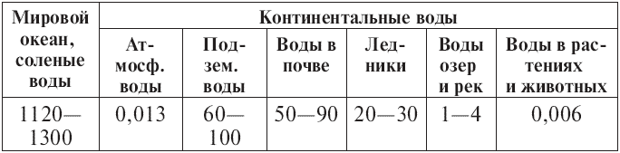

Источники воды и ее виды .

Чтобы вы могли представить, сколько и какой воды имеется на нашей планете, предлагаю вашему вниманию табл. 2.1. Воды у нас столь много, что измерять ее литрами, кубометрами или тоннами крайне неудобно, и мы будем использовать меру поистине титаническую – кубический километр (км^3). Всего воды на Земле около полутора миллиардов, или 1500 млн. км^3 воды.
Таблица 2.1. Распределение вод на земном шаре (единица измерения – миллион кубических километров)

Примечание. Данные в таблице приведены по минимуму и максимуму, с учетом разных оценок.
Итак, мы видим, что пресные воды, то есть воды на суше и в атмосфере, составляют порядка 10 % полного планетарного ресурса. Большая их часть – и это может вызвать удивление – находится не в открытых водоемах, а в земной коре: 110–190 млн. км^3! Эти воды принято делить на два типа в соответствии с глубиной их залегания. Подземные воды глубокого залегания расположены в десятках-сотнях метров от поверхности земли, они пропитывают пористые горные породы, а также образуют гигантские подземные бассейны, окруженные водонепроницаемыми слоями. Нередко вода в этих подземных полостях находится под давлением, и, если пробиться к ним с помощью буровой установки, вода брызнет вверх фонтаном. Такие фонтаны-гейзеры и родники природного происхождения хорошо известны.
Другой тип подземных вод – те, которые расположены в почве и верхних слоях земной поверхности на глубине нескольких метров. По сравнению с водами глубокого залегания у них есть один недостаток и одно преимущество. Недостаток: эти воды гораздо активнее контактируют с поверхностью земли и всем, что на нее сливают, выбрасывают или в нее закапывают; они гораздо слабее защищены от загрязнений, чем воды глубокого залегания. Преимущество: эти воды нам гораздо доступнее, они выступают в любой яме или канаве, и мы можем черпать их из колодцев.
Следующий по величине массив пресных вод (20–30 млн. км^3) сосредоточен в ледниках Антарктиды, Гренландии и островов Северного Ледовитого океана. Пресную воду из атмосферы (всего 13 тыс. км^3) мы получаем в виде осадков – дождя и снега. Основной запас пресной воды, употребляемой человеком, сосредоточен в озерах[7] и реках, причем надо учитывать, что, хотя реки протяженнее озер, их объем намного меньше. В живых организмах, то есть в растениях и животных (которые, напомню, на две трети состоят из воды), содержится 6 тыс. км^3 воды – величина, вполне сравнимая с объемом рек. Последнее не должно удивлять: одномоментный объем рек – это статика, а если рассматривать динамику, то лишь реки России переносят за год в океан 4 тыс. км^3 воды.
Так распределены водные ресурсы на нашей планете. Проанализировав данные таблицы, можно сделать вывод, что для питья, бытовых и промышленных нужд более доступными являются прежде всего воды озер и рек, снабжающие нас пресной водой не время от времени, а постоянно и с гарантией. К тому же эти запасы мы можем легко оценить и сопоставить с нашими сегодняшними и перспективными потребностями.
Доступны также и подземные воды обоих типов. Однако для крупных городов подземных вод недостаточно. В принципе, можно разведывать большие бассейны глубокого залегания и бурить скважины, но это дорого. К тому же кто гарантирует, что такой бассейн обнаружится вблизи населенного промышленного города? Будет ли вода в нем подходящей для питья, и не случится ли геологической катастрофы, если мы начнем изымать эту воду в больших количествах?
Осадки, то есть дождь и снег, также являются источниками пресной воды. Но это непостоянный, капризный источник, удовлетворяющий в основном потребности сельского хозяйства.
Значит, все-таки остаются реки и озера, и при этом реки для нас удобнее озер: воды в них меньше, но, как я уже упоминал, они гораздо протяженнее. Собственно, большая часть нашей цивилизации сосредоточена в речных долинах – обстоятельство, оставшееся неизменным со времен Древнего Египта, Аккада и Шумера.[8]